Prepare What should you do before get started with Drupal
Minimal requirements
To install and run Drupal your hosting server should meet the engine requirements. Most of the hosting companies meet the standards. However, there can be exceptions, that is why you should check the following properties.
Disk space
A minimum Drupal installation requires 15 Megabytes. 60 MB is needed for a website with many contributed modules and themes installed. Keep in mind you need much more space for the database, files uploaded by the users, media, backups and other files.
Web-server
Apache, Nginx или Microsoft IIS.
More details about web server requirements.
Apache is the most commonly used web server for Drupal. The majority of Drupal development and testing is done on this server. That's why it's recommended to use Apache.
Database
MySQL 5.0.15 or higher with PDO, PostgreSQL 8.3 or higher with PDO, SQLite 3.3.7 or higher.
When installing Drupal, please note that some of the modules may not support PostgreSQL and SQLite databases, moreover template configuration and sample data are stored in MySQL format. That is why it is recommended to use MySQL database only.
PHP
PHP 5.2.5 or higher (5.3 recommended).More details about PHP requirements.
Downloading Drupal engine
In case the Drupal engine is already downloaded/installed, skip this step.
The first step of Drupal website building is the engine downloading from the official website http://drupal.org/.
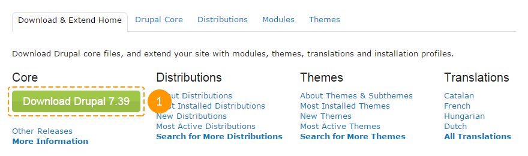
Using the link above you can download .zip or tar.gz archive with core files.
To download the latest Drupal version, click Download Drupal X.XX button, where X.XX is the latest Drupal version number.
If you are looking for an older Drupal version, follow the link Other Releases:
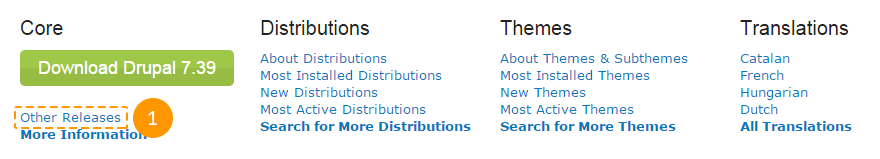
In the API Version field choose the required branch of Drupal versions and click Apply button:

Below you will see the full list of the selected branch versions, where you can download the required one.
Please, check the template requirements regarding the engine version compatibility and make sure that you are downloading the correct version.
Extracting files
When you are done with the downloading, you need to extract the files and folders from the engine package.
You can extract files using any archive manager like WinZip (PC), StuffitExpander (MAC), etc.
The following tutorials will show you how to extract archive files using WinZip (PC) and StuffitExpander (MAC) application.
Attention! If your hosting control panel includes the "Extract"option, you can upload .zip package to the server and extract files there.
Uploading Drupal engine to a server
If you extract files locally on your computer, you will need to upload them to a hosting server.
Drupal engine should be uploaded to the root directory of your hosting server. Usually it is named WWW or public_html. If you are not sure about the root directory name, contact your hosting provider for more information.
You can upload files to a server using programs for managing files, like FileZilla, TotalCommander, etc. There is also a number of browsers add-ons (e.g. FireFTP for Mozilla Firefox). Moreover some hosting providers offer the file manager option. Please, check your control panel or contact your hosting provider for more details.
Feel free to check the video tutorials: How to upload files to a server or How to upload files to a server using Cpanel (WebHost manager, WHM).
Creating a database
As it was mentioned above, Drupal installation requires MySQL database. Database can be created in your hosting control panel.
You can contact your hosting provider in order to get some help creating a database.
During the database creation process you will get the following details:
- Database server name or hostname.
- Database name.
- Database username.
- Database password.
Please, note these details. You will need them during the installation process.
Feel free to check the following instructions:
Drupal engine and theme installation All installation particularities
In this section you will see different ways of Drupal engine and theme installation. Please, follow this instruction if the Drupal is not installed to your server yet.
Before you get started, you need to decide if you want to install Drupal with sample data included or not. Template sample data will make your website look exactly the same way as the template demo. You will have all sample modules, text-blocks, media files installed.
If you are not ready to install sample data, please proceed to the step "Drupal theme installation without sample data". You can also install it later. Please, check "Drupal theme installation with sample data over the existing website" section.
Drupal theme installation with sample data
Sample data demo profile should be uploaded to a server BEFORE you install the Drupal engine!
To install your theme with sample data you should perform the following steps:
- Copy content of sample_data/ folder from the template package to the root directory of your Drupal installation on the server. You can overwrite the existing engine files. This folder contains theme files, modules, libraries, media files, demo profile, and some corrections required for the proper site functionality.
Replacement of these files adds a new option to the installation process so it will not effect the engine installation in any way.
- Type your website URL in a browser's address bar to start Drupal installation process (check the screenshots that show next three steps, in the slider, after the point 5).
- On the initial setup page you will need to select the installation profile. Choose Demonstration site and click Save and Continue button.
- Follow the instructions on the screen to install Drupal engine. Fill in the fields with your database name, username, password and hostname of the previously created database.
- On the Choose snapshot step select the snapshop with the name of your theme, as it is shown on the screenshot below, and click the Restore button.
Snapshot is a copy of a database that contains sample data and info about modules used in the template. The snapshot is in the MySQL database format.
To make your site look exactly like the template demo it is important to install the snapshot.
-
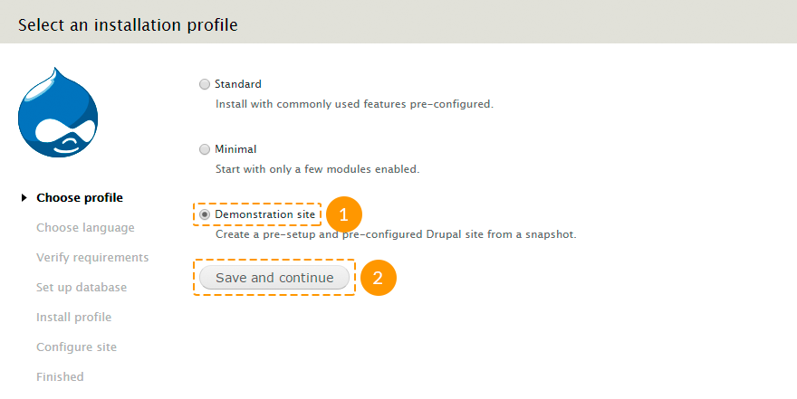
1. Select Demonstration site.
-

2. Fill in database details fields: database name, database user and password and database host.
-

3. Select the snapshot with the name of your theme.
-
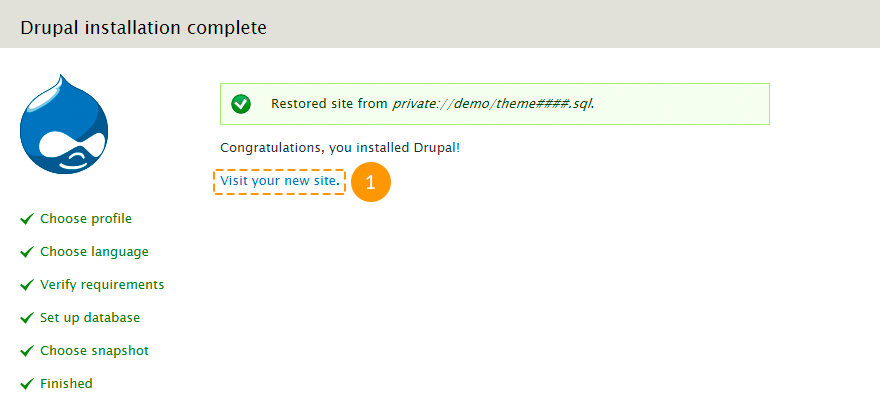
4. Open your new site.
- Click Visit your new site link or in a browser's address bar type http://www.example.com/?q=user/login, where www.example.com is your website URL.
To log in as website administrator use the following details: username admin and password admin123. We recommend that you change the password immediately after installation for security reasons.
- Drupal installation is almost completed. The last thing to do is to update the database tables. In a browser's address bar type http://www.example.com/update.php, where www.example.com is your website URL.
- Follow the instructions on the screen.
- After the update is done, click one of the links: Front page or Administration pages.
Feel free to check the following instructions:
Drupal theme installation without sample data
Follow the instructions listed below to install the template without sample data:
- Copy all content of sample_data/sites/all/themes/ folder from the template package to sites/all/themes/ directory of the Drupal installation on your server.
Note that some of the theme elements are made using modules. On the current installation step the front-end layout and theme functionality may differ from the one you've seen on the live demo, because the modules are not enabled.
- To install modules copy the content of sample_data/sites/all/modules/ and sample_data/sites/all/libraries/ folders from the template package to sites/all/ directory of the Drupal installation on your server. You can skip this step if you do not want to use the default template modules.
- Type your website URL in a browser's address bar to start Drupal installation process (check the screenshots that show next three steps, in the slider, after the point 6).
- On the initial setup page you will need to select the installation profile. Choose Standard and click Save and Continue button:
- On the next step fill in the fields with your database name, username, password and hostname of the previously created database.
- Register site administrator
-
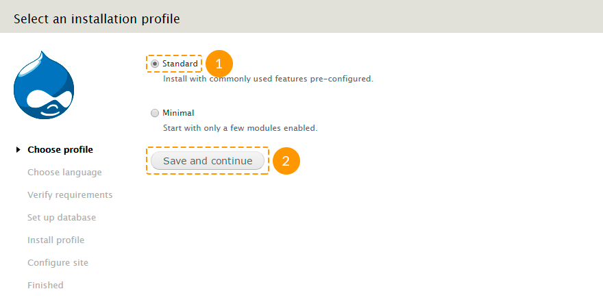
1. Select Standard.
-
2. Fill in database details fields: database name, database user and password and database host.
-

3. Register site administrator
-
4. Open your new site.
- Click Visit your new site link or in a browser's address bar type http://www.example.com/?q=user/login, where www.example.com is your website URL. To log in to Drupal admin panel use username and password specified on the previous step.
- In the admin panel navigate to Appearance menu or in a browser's address bar type http://www.example.com/?q=admin/appearance, where www.example.com is your website URL.
- Find your installed theme and click Enable and set default.
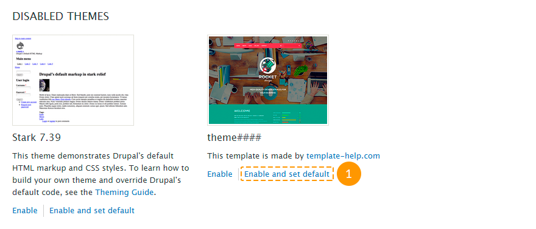
- In case you've uploaded the modules folder on the second installation step, navigate to Modules menu in the admin panel or type http://www.example.com/?q=admin/modules in a browser's address bar, where www.example.com is your website URL. Activate the uploaded modules. More detailed information you can check in the "Configuring modules" section.
Feel free to check the following instructions:
Drupal theme installation with sample data over the existing site
Theme installation with sample data will erase all your website content and setting and replace it with the sample one!
We highly recommend that you backup your database before installing the theme using snapshot.
If you have a running Drupal website and still want to install the theme with sample data please follow the instructions below:
- Copy content of sample_data/sites/all/ folder from the template package to sites/all/ directory of the Drupal installation on your server.
- Copy content of sample_data/sites/default/ folder from the template package to sites/default/ directory of the Drupal installation on your server.
Be careful replacing the files! DO NOT replace "settings.php" and "default.settings.php" files, otherwise you will have to re-install the Drupal engine!
- Log in to Drupal website as administrator.
- In the admin panel navigate to Configuration → File system menu or follow the link http://www.example.com/?q=admin/config/media/file-system, where www.example.com is your website URL.
- In the Private file system path field set sites/default/private/files value.
- Then in the admin panel open Modules menu or follow the link http://www.example.com/?q=admin/modules, where www.example.com is your website URL.
- Make sure that Demonstration site module is enabled.
- In the admin panel navigate to Structure → Snapshots menu, open Reset tab or follow the link http://www.example.com/?q=admin/structure/demo/reset, where www.example.com is your website URL.
- Select the theme### snapshot, where ### is the number of your theme.
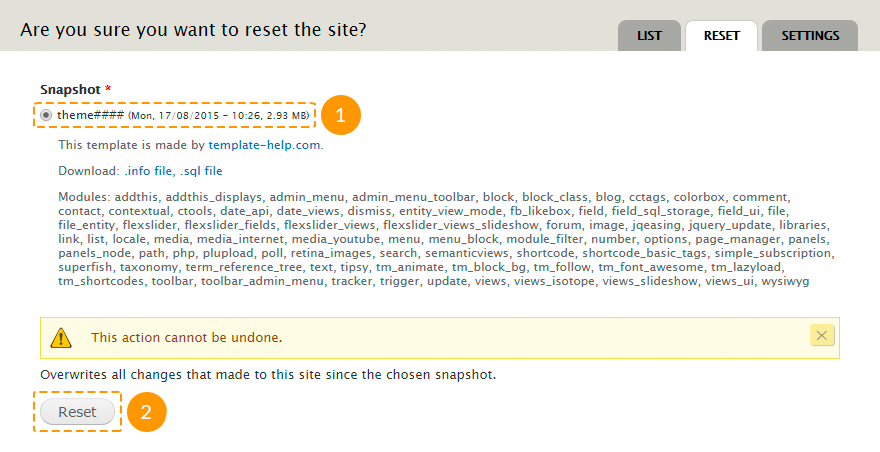
- Click Reset button. Confirm the action.
- Log in to Drupal website as administrator.
To log in to your website as administrator after the sample data is installed, use username admin and password admin123. We recommend that you change the password immediately after installation for security reasons.
- The last thing to do is to update the database tables. In a browser's address bar type http://www.example.com/update.php, where www.example.com is your website URL.
- Follow the instructions on the screen.
- After the update is done, click one of the links: Front page or Administration pages.
Feel free to check the following instructions:
Drupal theme installation without sample data over the existing site
To install Drupal theme without sample data over the existing site you should perform the following steps:
- Copy content of sample_data/sites/all/themes/ folder from the template package to sites/all/themes/ directory of the Drupal installation on your server.
Note that some of the theme elements are made using modules. On the current installation step the front-end layout and theme functionality may differ from the one you've seen on the live demo, because the modules are not enabled.
- To install modules copy the content of sample_data/sites/all/modules/ and sample_data/sites/all/libraries/ folders from the template package to sites/all/ directory of the Drupal installation on your server. You can skip this step if you do not want to use the default template modules.
- Log in to Drupal website as administrator.
- In the admin panel navigate to Appearance menu or in a browser's address bar type http://www.example.com/?q=admin/appearance, where www.example.com is your website URL.
- Find your installed theme and click Enable and set default.
- In case you've uploaded the modules folder on the second installation step, navigate to Modules menu in the admin panel or type http://www.example.com/?q=admin/modules in a browser's address bar, where www.example.com is your website URL. Activate the uploaded modules. More detailed information you can check in "Configuring modules" section.
Feel free to check the following instructions:
Configuration All aspects of site components configuration
Drupal based site contains a lot of general site settings together with its elements settings. In this section we will overview only the main settings.
Drupal settings
To check the full list of settings open Configuration menu in the admin panel or type http://www.example.com/?q=admin/config in a browser's address bar, where www.example.com is your website URL.
In order to change the default site settings, follow the instructions below:
- In the admin panel navigate to Configuration → System → Site information menu or in a browser's address bar type http://www.example.com/?q=admin/config/system/site-information, where www.example.com is your website URL.
-
Change the required parameters:
- site name;
- site slogan;
- site e-mail address;
- the number of blog posts on Blog page (or main page, if there are any posts attached to the main page);
- site main page URL;
- 403 page's URL (access denied);
- 404 page's URL (page not found).

- After you've made necessary changes, click Save configuration button.
Theme settings
Every theme includes its own list of settings.
In order to change the default theme settings, follow the instructions below:
- In the admin panel navigate to Appearance menu or in a browser's address bar type http://www.example.com/?q=admin/appearance, where www.example.com is your website URL.
- Click the Settings link under the name of your theme:

-
In the General Settings tab you can set the following parameters:
- show/hide logo, sitename, slogan, user pictures in posts, user pictures in comments, user verification status in comments, shortcut icon, main and secondary menu;
- use the default theme logo or upload a custom one;
- use the default theme favicon or upload the custom one;
- stick the menu to the top of the browser window.

-
In the Breadcrumb Settings tab you can set the following parameters:
- show/hide breadcrumb;
- show/hide breadcrumb, if it only contains a link to the front page;
- show a separator between breadcrumbs.

-
In the Regions Settingstab you can set the following parameters:
- set a background of the required region, and activate parallax effect;
- set a YouTube-video background of the required region and also specify start video time in seconds;
- make the region content fullwidth (e.g. remove grids).
Some of that options require the TM Block Background module activated.
- In the Blog Settings you can set the blog title. Leave this field empty to make the blog title be the same as the corresponding menu link title.
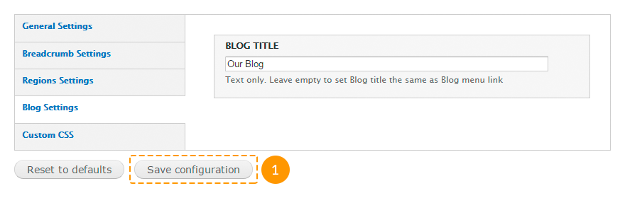
- In the Custom CSS tab you can add custom styles for the theme.

This option refers to the purchased theme only. You cannot set any styles for other themes, such as Seven etc.
Configuring modules
Standard modules:
| Name | Description | |
|---|---|---|
| Aggregator | Allows to gather information from many websites (especially news desks) and view that information in a consolidated format on your site. | |
| Block |
Controls the visual building blocks on pages regions. Blocks are boxes of content rendered into an area, or region, of a web page. Required to be enabled. The template content is built on blocks. |
|
| Blog |
Enables multi-user blogs. Every user will have a blog with his/her own content. Recommended to be enabled. Drupal templates use blogs, however you can disable this module if you are not going to use it. |
|
| Book | Allows users to group content in books. Books is a useful method of content organizing. Books pages include additional navigation elements: next page and previous page links and links that leads to the level above in the content structure. | |
| Color | Allows administrators to change the color scheme of compatible themes. | |
| Comment |
Allows users to comment on and discuss published content. Recommended to be enabled. Drupal templates use comments, however you can disable this module if you are not going to use it. |
|
| Contact |
Allows site visitors to send emails to other authenticated users and to the site administrator. Enables the use of both personal and site-wide contact forms. Recommended to be enabled. Drupal templates use contact forms, however you can disable this module if you are not going to use it. |
|
| Content translation | Allows content to be translated into different languages. It works together with the Locale module. | |
| Contextual links |
Provides contextual links to perform actions related to elements on a page. Recommended to be enabled. The module is activated for usability of the quick template content modifying. Also below you can see recommendations on editing content based on this module. If you don't need this module, you can disable it. |
|
| Dashboard | Provides a dashboard page in the administrative interface for organizing administrative tasks and tracking information within your site. On the dashboard page you can put and organize blocks your way. | |
| Database logging | Logs and records system events to the database. | |
| Field |
Allows to add additional fields to entities like nodes and users, and to save, upload, edit and display them. Required to be enabled. It is essential for the site core functionality. |
|
| Field SQL storage |
Stores additional field data in an SQL database. Required to be enabled. It is essential for the site core functionality. |
|
| Field UI |
User interface for the Field module. Required to be enabled. A lot of content types use additional fields. |
|
| File |
Defines a file field type, that allow to manage files attached to a node. Required to be enabled. A lot of content types use attached files (f.e., images). |
|
| Filter |
Allows to adjust different display formats, that define allowed in nodes HTML tags, rules for data entry manipulating and other parameters. Required to be enabled. It is essential for the site core functionality. |
|
| Forum |
Allows to create discussion forums on the site and allows your users to participate in online conversations by posting responses. Forums can include an embedded hierarchy that helps to group discussions by topics. Recommended to be enabled. The demo sample data contains forum, however you can disable this module if you are not going to use it. |
|
| Help | Allows to create help pages and to display context help on the site management pages. This is a system integrated version of the online guidance. | |
| Image |
Adds field for images. Module use parameters defined on the "Image processing" and "Image styles" pages. There you can edit image dimensions and display options. Required to be enabled. A lot of content types use attached images. |
|
| List |
Defines list field types. Recommended to be enabled. Some Drupal templates use list fields. If you are not sure, don't disable this module. |
|
| Locale |
Allows to present your Drupal site in different languages. This module controls translations of the interface lines in database. It checks if a translation of the required line is available before displaying it on the site. When the line with translation is available, it displays it instead of the original one. When the line with translation is not available, it displays the original line in English. It allows to avoid the lack of elements, if they are not translated.
Recommended to be enabled. Drupal templates include the content translation feature by default. However if you are not going to add additional languages to your site, you can disable this module. |
|
| Menu |
Allows to create the navigation blocks (menu). Required to be enabled. All Drupal templates use at least one menu. |
|
| Node |
Controls content parameters, allows content to be created, edited, deleted and displayed on pages. Required to be enabled. It is essential for the site core functionality. |
|
| Number |
Defines numeric field types. It allows to use fractional or integer number and different number display formats. Numeric fields can be limited to a specific set of input values or to a range of values. Recommended to be enabled. Some Drupal templates use numeric fields. If you are not sure, don't disable this module. |
|
| OpenID | Allows users to log into your site using OpenID. The OpenID technology is a secure method for logging into many websites with a single username and password. | |
| Options |
Defines selection, check box and radio button widgets for text and numeric fields. Required to be enabled. It can be used in additional fields, for taxonomy, for tag clouds, etc. |
|
| Overlay | Displays the Drupal administration interface in an overlay. | |
| Path |
Allows to add an alternative path for any system path. Every system URL can use unlimited number of alternative URLs. Recommended to be enabled. Drupal templates include the alternative path feature by default. However if you are not going to use it, you can disable this module. |
|
| PHP filter |
Adds the PHP filter to display formats. This filter allows embedded PHP code/snippets to be evaluated. Required to be enabled. Some blocks use PHP-code (f.e., copyright block). |
|
| Poll |
Allows your site to capture votes on different topics in the form of multiple choice questions. Recommended to be enabled. The template sample data can include a poll, however if you are not going to use it or create new polls, you can disable this module. |
|
| RDF | Enriches your content with metadata to let other applications (e.g. search engines, aggregators) better understand its relationships and attributes. | |
| Search |
Allows to index the text content of your site and do keyword and user search on pages and in nodes. Recommended to be enabled. Drupal templates include content and user search features by default, however if you are not going to use this module functionality, you can disable it. |
|
| Shortcut | Allows users to create customizable lists of shortcut links to favorite site pages and organize these links in multiple sets of shortcuts. Users can choose any available on the site set of shortcuts. | |
| Statistics |
Shows you how often a given page is viewed, who viewed it, the previous page the user visited (referrer URL), and when it was viewed. These statistics are useful in determining how users are visiting and navigating your site and what pages/nodes they prefer. Recommended to be enabled. If your blog displays the number of entry views, do not disable this module. |
|
| Syslog | Logs and records system events to the system log file. | |
| System |
Provides system-wide defaults for running jobs at particular times, storing (caching) web pages to improve efficiency, enabling/disabling modules and themes, generating management pages and performing other essential tasks. The module also keeps track of various preferences you give for how you want your system to behave. Required to be enabled. It is essential for the site core functionality. |
|
| Taxonomy |
Enables the categorization of content. For this you should define vocabularies with terms related to different content elements. Required to be enabled. All Drupal templates use taxonomy-based fields. |
|
| Testing | Provides a framework for unit and functional testing. | |
| Text |
Defines text field types. Required to be enabled. It is essential for the site core functionality. |
|
| Toolbar |
Provides a toolbar that shows the top-level administration menu items and links from other modules. Recommended to be enabled. Drupal templates use top administration navigation menu by default, however if you are not going to use it, you can disable this module. |
|
| Tracker |
Enables tracking of recent content for users. The module shows information about added and updated nodes and about added to the nodes comments. Recommended to be enabled. Drupal templates include the tracking of recent content feature by default. However if you are not going to use this functionality, you can disable this module. |
|
| Trigger |
Enables actions to be fired on certain system events, such as new content adding or user login. Recommended to be enabled. It is required for the Subscription block (check "Additional modules"). If you are not going to use it, you can disable this module. |
|
| Update manager |
Periodically checks for new versions of your site's software (including contributed modules and themes), and alert you to available updates. This module also can securely install or update modules and themes via a web interface. Recommended to be enabled. Drupal templates include the module update installation feature. We recommend that you do not disable this module. |
|
| User |
Manages the user registration and login system. The modules also allows to manage user roles and permissions. Required to be enabled. It is essential for the site core functionality. |
- module enabled by default; - module disabled by default.
Modules, that do not marked as required or recommended, can be enabled/disabled depending on your choice: are you going to use their functionality or not.
Deactivating the modules, marked as recommended to be enabled, is not desirable, however it is not critical.
Additional modules:
| Name | Package | Description | |
|---|---|---|---|
| AddThis | addthis |
Adds the "Social Share" block from AddThis.com. Recommended to be enabled. The template sample data includes "Social Share" buttons on the blog pages. |
|
| AddThis Displays | |||
| Administration Development tools | admin_menu |
Provides a drop-down menu to most administrative tasks and other common destinations (to users with the proper permissions). Recommended to be enabled. Drupal templates use an alternative drop-down menu for the navigation usability in the admin panel. If you are not going to use such functionality, you can disable this module. |
|
| Administration menu | |||
| Administration menu Toolbar style | |||
| Block Class | block_class |
Allows to add custom classes to blocks. Recommended to be enabled. With the help of custom classes you adds not only styles, but also grid system classes to blocks. |
|
| Cctags | cctags |
Allows to create a tagcloud of taxonomy terms. Recommended to be enabled. The template sample data includes a tagcloud, however if you are not going to use it, you can disable this module. |
|
| Colorbox | colorbox |
Allows to add lightbox feature for the images. Recommended to be enabled. On the portfolio (gallery, services) page images open in lightboxes. |
|
| Bulk Export | ctools |
This API and tool set make the developer's work easier. This module manages panels pages and other elements. Required to be enabled. Most modules work on the basis of this module. |
|
| Chaos tools | |||
| Chaos Tools (CTools) AJAX Example | |||
| Chaos Tools (CTools) Plugin Example | |||
| Custom content panes | |||
| Custom rulesets | |||
| Page manager | |||
| Page manager redirect | |||
| Page manager redirect examples | |||
| Stylizer | |||
| Term Depth access | |||
| Views content panes | |||
| Date | date |
Allows to create additional fields like date/time field. It also serves as the basis for other modules. Recommended to be enabled. Before disabling this module make sure that sample data does not include the date/time field. |
|
| Date All Day | |||
| Date API | |||
| Date Context | |||
| Date Popup | |||
| Date Repeat API | |||
| Date Repeat Field | |||
| Date Tools | |||
| Date Views | |||
| Date Migration Example | |||
| Demonstration site | demo |
Creates snapshots and reset the site for demonstration or testing purposes. Recommended to be enabled. This module helps to install template sample data and settings of all modules and blocks |
|
| Demonstration site reset | |||
| Dismiss | dismiss |
Adds the "Dismiss" button to Drupal messages, warnings, and errors. Recommended to be enabled. Drupal templates use this module for convenience, however if you are not going to use this functionality, you can disable this module. |
|
| Entity view modes | entity_view_mode |
Allows administrators to define custom view modes for entities (comments, nodes, files, users, taxonomies) via the administration user interface. Recommended to be enabled. Drupal templates use additional view modes for media files in the blog entries. |
|
| FlexSlider | flexslider |
Integrate the FlexSlider library with Drupal Recommended to be enabled. With the help of this module you can create sliders and different types of carousels. |
|
| FlexSlider Example | |||
| FlexSlider Fields | |||
| FlexSlider Views Style | |||
| Flex Slider Views Slideshow | flexslider_views_slideshow |
Integrate the FlexSlider library with Views Slideshow With the help of this module you can create sliders and different types of carousels. |
|
| jQuery Easing | jqeasing |
Makes the 'jQuery Easing' plugin available to Drupal as a library. Required to be enabled for the proper theme and some modules functionality. |
|
| jQuery Update | jquery_update |
Update jQuery and jQuery UI to a more recent version. Required to be enabled for the proper theme and most modules functionality. Do not use jQuery 1.8 version or higher, because some plugins (f.e., Superfish) cannot work properly with the latest script versions. |
|
| Libraries | libraries |
Allows to add external libraries for modules, themes and profiles. Required to be enabled. A lot of modules use libraries. |
|
| Link | link |
Defines simple link field types. Recommended to be enabled. Some content types use links (f.e., "Employee"). |
|
| File entity | media |
Allows to upload files without FTP, create and manage media libraries on your site. Recommended to be enabled. Drupal templates use this module as the file uploader for images and it also helps to add videos to the blog entries. |
|
| Media | |||
| Media Internet Sources | |||
| Media: YouTube | media_youtube |
Provides YouTube support for the File Entity and Media modules. Recommended to be enabled. The template sample data includes YouTube videos, however if you are not going to use such service, you can disable this module. |
|
| Menu Block | menu_block |
Provides configurable blocks of menu items. Recommended to be enabled. Drupal templates usually use this module for the footer menu creating. |
|
| Menu Block Export | |||
| Module filter | module_filter |
Allows to add modules filtering in the administration panel. This module adds the search bar for modules and also allows to display the list of modules categories. Recommended to be enabled. Drupal templates use this module for usability, particularly for the quick search and configuring modules. |
|
| Olark Chat | olark |
Allows to add Olark live chat to the site. Recommended to be enabled. This modules enables the live chat. |
|
| Mini panels | panels |
Allows to create mini panels and display them on the site pages. Recommended to be enabled. Most of main template pages are created with the help of this module. |
|
| Panel nodes | |||
| Panels | |||
| Panels In-Place Editor | |||
| Panels translation | |||
| Plupload integration module | plupload |
Allows to upload some images at the same time. Recommended to be enabled. Drupal templates use this module for easier images uploading. |
|
| Retina Images | retina_images |
Provide an image effect to output images in high resolution format for high resolution displays (retina screens with 2.5x size). Recommended to be enabled. The template sample data includes only images cropped for retina displays. |
|
| Semantic Views | semanticviews |
Is an add-on for the Views module. It makes unformatted styles, field row styles and other output (esp., different HTML elements) more readily configurable without needing to override template files. Recommended to be enabled. The template sample data includes some views created with the help of this module. |
|
| Shortcode | shortcode |
Provides shortcodes filter framework and API. Recommended to be enabled. This modules allows to add a content type that is not available in the standard tool set. |
|
| Shortcode Basic Tags | |||
| Shortcode Embed Content Tag | |||
| Shortcode Video Macro | |||
| Simple Subscription | simple_subscription |
Adds a form in a block for subscribing to a newsletter (or anything else). Recommended to be enabled. The template sample data includes subscription forms, however if you are not going to use it, you can disable this module. |
|
| Superfish | superfish |
Integrates jQuery Superfish plugin for Drupal drop-down menus. Recommended to be enabled. Drop-down menu is used for the main site menu. |
|
| Term Reference Tree | term_reference_tree |
Allows to display an expanding/collapsing tree widget for selecting terms in a taxonomy term reference field. Recommended to be enabled. Portfolio and blog categories are displayed in the tree format. You can change the display format in the corresponding content type settings. If you are not going to use such functionality, you can disable this module. |
|
| Tipsy tooltips | tipsy |
Integrates Tipsy jQuery plugin for creating a Facebook-like tooltips effect for text areas, fields and other HTML elements, that you can define on your own. Recommended to be enabled. Tooltips are used for contact forms on the contact page. If you are not going to use such functionality, you can disable this module. |
|
| TM Animate | tm_animate |
Provides a cross-browser library of CSS animations. Required to be enabled. Some themes can use CSS animation classes. |
|
| TM Block Background | tm_block_bg |
Provides block background settings. Allows to add effects, videos and parallax effect to blocks backgrounds. Required to be enabled. This module allows to use parallax effects and videos for the background of the purchased theme. |
|
| TM Cookie Notice | tm_cookie_notice |
Displays notifications about the cookie usage on the site. Recommended to be enabled. According to the Cookie Law the module allows to notify users about the cookie usage. |
|
| TM Follow Us | tm_follow |
Adds sitewide and per user links to social network profiles. Recommended to be enabled. The template sample data includes the social icons block, however if you are not going to use that block, you can disable this module. |
|
| TM Font Awesome | tm_font_awesome |
Provides iconic font designed for use with Twitter Bootstrap. FontAwesome 4.1.0 version. Required to be enabled. Drupal templates styles use the iconic font. |
|
| TM Lazyload | tm_lazyload |
Automatically lazyload images on windows scroll, makes sites with multiple images load faster. Recommended to be enabled. Lazyload effect is used for images on the blog pages. |
|
| TM Shortcodes | tm_shortcodes |
Provides basic shortcode tags like columns, toggle, tabs, highlight, dropcap, etc.. Recommended to be enabled. This modules allows to add a content type that is not available in the standard tool set. |
|
| Hide the Toolbar | toolbar_admin_menu |
Hides Drupal's core toolbar for users with the Administration menu. Recommended to be enabled. If you don't use the Administration menu module, you can disable this module. |
|
| Views | views | Creates customized lists and queries from your database. Recommended to be enabled. The most part of the sample data is created with the help of views. | |
| Views UI | |||
| Views Accordion | views_accordion |
Provides an accordion views display plugin. Recommended to be enabled. Before disabling this module make sure that the template sample data does not include accordions. |
|
| Isotope Example | views_isotope |
Allows to create views using Isotope library. Recommended to be enabled. Portfolio (gallery, services) page is created using Isotope library. |
|
| Views Isotope | |||
| Views Slideshow | views_slideshow |
Provides a view style that displays rows as a jQuery slideshow. Recommended to be enabled. Before disabling this module make sure that the template sample data does not include views created using this module. |
|
| Views Slideshow: Cycle | |||
| Wysiwyg | wysiwyg |
Allows to edit content with visual editors. Recommended to be enabled. This module is enabled for the usability of adding different types of content to nodes. |
- module enabled by default; - module disabled by default.
Modules, marked as required to be enabled, should be uploaded by all means.
Modules, marked as recommended to be enabled, should be uploaded by all means if you install the template with sample data.
Modules enabled for usability can be deactivated on your consideration.
Each module contains its own settings. To set up the module, follow the steps below:
- Log in to Drupal website as administrator.
- In the admin panel navigate to Modules menu or in a browser's address bar type http://www.example.com/?q=admin/modules, where www.example.com is your site URL.
- Find the required module. You can use module filters to find the right one.
- Click Configure link next to the module title.

- Make necessary changes and save the settings.
Feel free to check the following instructions:
Configuring blocks
Follow the instructions listed below to configure your blocks:
- Log in to Drupal website as administrator.
- In the admin panel navigate to Structure → Blocks menu or in a browser's address bar type http://www.example.com/?q=admin/structure/block, where www.example.com is your website URL.
- You can move blocks to different regions by using drag-and-drop method on this page:

- You can move blocks using drop-down menus in the Region column:
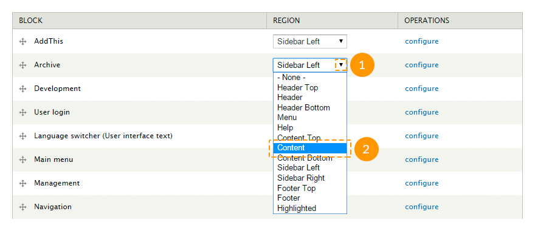
- Each block settings can be configured separately by clicking configure link in the Operations column:

-
The following parameters can be set on the block settings page:
- block title;
- custom CSS class for this block;
- block's region for each theme separately;
- visibility settings (for certain pages, specific content types, specific user roles and separate users);
- block background setting (similarly to the region settings in the theme options).

Keep in mind that block occupies the width of the region it is set to. To make the block with parallax effect or with video occupy the full width, put it to the region with the Fullwidth option enabled.
Some blocks may include additional settings:
- You can also open the block settings page directly from your site front-end. To do it, please, mouse over the needed block, click the gear wheel icon at the top right corner of the block and choose the Configure block option. This option is available only for the logged in users with the administrator rights:

Configuring "Social Share" buttons
The AddThis module controls the activation/deactivation of the "Social Share" block.
To change global settings of the "Social Share" block, in the admin panel navigate to Configuration → User interface → AddThis menu or in a browser's address bar type http://www.example.com/?q=admin/config/user-interface/addthis, where www.example.com is your website URL.
These settings controls the "AddThis" module functionality, however you can manage this module the same way as a regular block.
Do not change that settings, if you are not sure.
To change the "Social Share" block settings for the Blog Entry content type, follow the instructions below:
- In the admin panel open Structure → Content types → Blog entry menu and navigate to Manage display tab or in a browser's address bar type http://www.example.com/?q=admin/structure/types/manage/blog/display, where www.example.com is your website URL.
- Check Full content option.
- Click the gear wheel icon next to the AddThis field.
- Change the names of the sharing services (the full list of names is available on the site www.addthis.com, separate with commas required values from the Code column), change buttons size, counter orientation, specify extra CSS classes, if you need them. Press Update button.
To remove "Social Share" buttons from the Blog Entry content type, follow the instructions below:
- In the admin panel open Structure → Content types → Blog entry menu and navigate to Manage Fields tab or in a browser's address bar type http://www.example.com/?q=admin/structure/types/manage/blog/fields, where www.example.com is your website URL.
- Click delete link next to the AddThis field and confirm the action.
To add "Social Share" buttons to any other content type, follow the instructions below:
- In the admin panel open Structure → Content types → Content type name menu, where Content type name is the name of the needed content type.
- Navigate to Manage fields tab.
-
On the Add new field field enter the following parameters:
- label - a field name, enter any value;
- machine-readable name - a system field name generated automatically, however you can edit it if you need;
- type of data to store - type of data, select AddThis value;
- form element to edit the data - a form element type for the field managing, select AddThis button value.

- Press Save button.
- To edit the buttons design, follow the steps for configuring "Social Share" buttons for the Blog entry content type.
Using animation and configuring its settings
The TM Animate module controls the activation/deactivation of animation. Moreover, depending on where do you want to use animation, you may need the Block class or Views modules.
To add animation to a block, follow the steps below:
- In the admin panel navigate to Structure → Blocks menu or in a browser's address bar type http://www.example.com/?q=admin/structure/block, where www.example.com is your website URL.
- Click configure link next to the needed block.
- In the CSS class(es) field add 2 classes separated with space: wow, to run animation when the block appears in the visibility, and the animation class.
- Save the changes.

To add animation to a view, follow the steps below:
- In the admin panel navigate to Structure → Views menu or in a browser's address bar type http://www.example.com/?q=admin/structure/views, where www.example.com is your website URL.
- Click edit link next to the needed view.
It works only for views with the Semantic Views format.
- In the Format section click settings link.

- In the pop-up window in the Row section find Class attribute field and enter the animation class and wow class there.

- Press Apply button.
- Save the view changes.
All available animation classes you can check on the site daneden.github.io
Configuring social icons
The TM Font Awesome and TM Follow Us modules control the activation/deactivation of the social icons block.
To configure the social icons block settings, follow the steps below:
-
In the admin panel navigate to Structure → Blocks menu or in a browser's address bar type http://www.example.com/?q=admin/structure/block, where www.example.com is your website URL.
You can open these settings by selecting Configure block option from the contextual menu of the social icons block.
- To show/hide this block on user pages, check/uncheck User pages option.
- To show/hide social networks labels near icons, check/uncheck Display labels option.
- To display icons vertically/horizontally, select the required value in the Alignment field.
- After all changes are done, press Save block button.

To configure additional display parameters for social icons, follow the steps below:
-
In the admin panel navigate to Configuration → TM Follow menu or in a browser's address bar type http://www.example.com/?q=admin/config/tm_follow, where www.example.com is your website URL.
You can open these settings by selecting Edit TM Follow links option from the contextual menu of the social icons block.

- To hide any social icon on the site, remove link from the URL field next to the needed social network.
- To display any social icon on the site, insert the link to your social media profile to the URL field.
- To change a social icon name, specify a new title in the Customized name next to the needed module.
- After all changes are done, press Submit button.
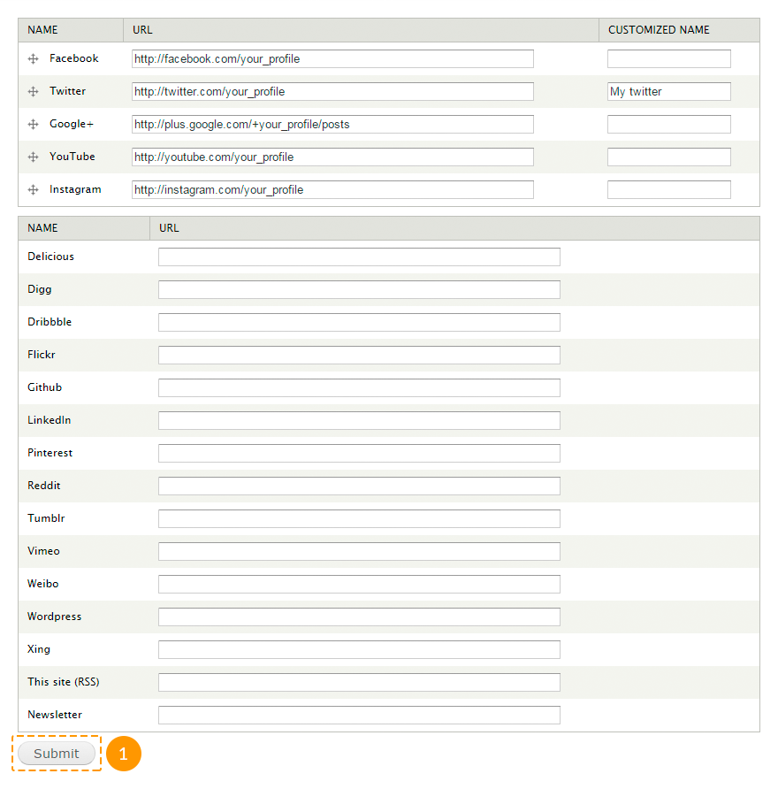
Social icons per user can be configured the same way.
To configure social icons per user block you should edit the TM Follow User block.
To configure additional display parameters for social icons per user, follow the steps below:
- In the admin panel navigate to People menu or in a browser's address bar type http://www.example.com/?q=admin/people, where www.example.com is your website URL.
- Next to the needed user click edit link.
- Navigate to TM Follow tab.
- Perform the necessary changes and save them.
Using LazyLoad effect
The TM Lazy Load module controls the activation/deactivation of the lazyload effect for images.
To configure lazyload settings for images, follow the instructions below:
- In the admin panel navigate to Configuration → TM Lazyload menu or in a browser's address bar type http://www.example.com/?q=admin/config/tm_lazyload, where www.example.com is your website URL.
-
Perform the necessary changes in the following fields:
- Enabled - enable/disable lazyload effect.
- Distance - the distance (in pixels) of image to the viewable browser window before it loads the actual image.
- Placeholder Image - path to your placeholder image. Leave it blank to use the default image.
- Loader Icon - available loader icons.
- Excluded Pages - list of the page paths to be excluded from lazyloading.
- After all changes are done, press Save button.
Using Parallax effect
The TM Block Background module controls the activation/deactivation of the parallax effect for blocks.
There are 2 ways to create a block with parallax effect.
Method #1.
- Open the theme settings: in the admin panel navigate to Appearance → Settings → Theme### menu.
- Open Regions Settings tab.
- In the needed region check Fullwidth option.
- Save the changes.
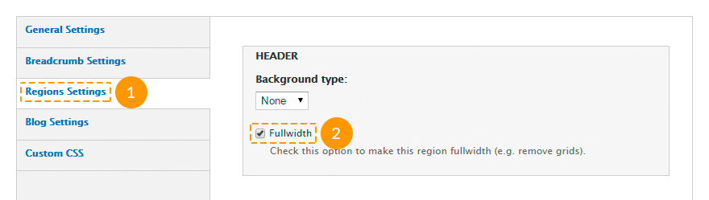
- Create a new block: in the admin panel navigate to Structure → Blocks → Add block menu or in a browser's address bar type http://www.example.com/?q=admin/structure/block/add, where www.example.com is your website URL.
- Insert the block content between
<div class="container-12"><div class="grid-12">and</div></div>tags.

- In the Region settings section for the installed theme select the region you've edited at the step 3.
-
In the TM Block background settings section specify the following parameters:
- in the Background type field choose image value;
- in the Background image field upload the required image or select it from the media library;
- check Use parallax option.

- Fill in other fields and save the changes.
Method #2.
- Open the theme settings: in the admin panel navigate to Appearance → Settings → Theme### menu.
- Open Regions Settings tab.
-
In the needed region specify the following parameters:
- in the Background type field choose image value;
- in the Background image field upload the required image or select it from the media library;
- check Use parallax option.
- Save the changes.
- Navigate to Structure → Blocks menu or in a browser's address bar type http://www.example.com/?q=admin/structure/block, where www.example.com is your website URL.
- Put the needed block to the edited region.
- Save the changes.
Using video background
The TM Block Background module controls the activation/deactivation of the video background effect for blocks.
There are 2 ways to create a block with video background effect.
Method #1.
- Open the theme settings: in the admin panel navigate to Appearance → Settings → Theme### menu.
- Open Regions Settings tab.
- In the needed region check Fullwidth option.
- Save the changes.
- Create a new block: in the admin panel navigate to Structure → Blocks → Add block menu or in a browser's address bar type http://www.example.com/?q=admin/structure/block/add, where www.example.com is your website URL.
- Insert the block content between
<div class="container-12"><div class="grid-12">and</div></div>tags.
- In the Region settings section for the installed theme select the region you've edited at the step 3.
-
In the TM Block background settings section specify the following parameters:
- in the Background type field choose video value;
- in the Background Video URL field insert the link to a YouTube video;
- in the Start video at field specify the time (in seconds) you want the video starts from. Leave this field empty, if you want the video starts from the very beginning.

- Fill in other fields and save the changes.
Method #2.
- Open the theme settings: in the admin panel navigate to Appearance → Settings → Theme### menu.
- Open Regions Settings tab.
-
In the needed region specify the following parameters:
- in the Background type field choose video value;
- in the Background Video URL field insert the link to a YouTube video;
- in the Start video at field specify the time (in seconds) you want the video starts from. Leave this field empty, if you want the video starts from the very beginning.
- Save the changes.
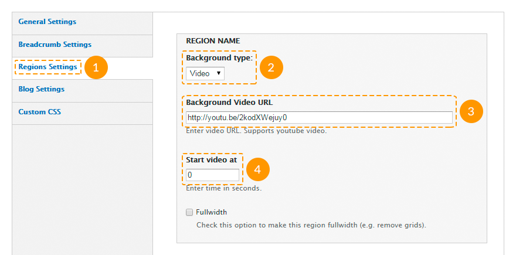
- Navigate to Structure → Blocks menu or in a browser's address bar type http://www.example.com/?q=admin/structure/block, where www.example.com is your website URL.
- Put the needed block to the edited region.
- Save the changes.
Cookie policy
Cookies are small text files which websites place on visitors’ computers. They’re typically used to identify that particular visitor and provide them with a better experience. Cookies are a crucial part of many website functions which we take for granted.
For instance, it’s usually cookies which allow online shops to remember what items you have in your shopping trolley. They’re also used to keep you logged in to a website, or to provide valuable usage statistics and information to website owners.
If you run a website, it almost certainly uses cookies. Their most likely function is to monitor visitor numbers and behaviours through tools like Google Analytics. They may also be used to display relevant adverts to visitors, or – if you sell online – to power key parts of your online shopping system.
26th May 2012 - The ICO released a change to the enforcement, "implied consent" is now allowed as long as you make it clear where your privacy/cookie policy is.
According to the Cookie Law, your website should use a proper module that displays notifications about the cookie usage on the site. You can use the the following modules: TM Cookie Notice (available in the downloaded Drupal template package), EU Cookie Compliance, Cookie Control.
Google Web Fonts
In case when Google Web Fonts do not work on your site (for example, if Google servers are banned in your country), perform the following steps:
- Extract files from the downloaded template package to your computer.
- Via any text editor (f.e., notepad, notepad++, etc.) open sites\all\themes\theme###\less\style.less file, where theme### is the number of the downloaded theme.
-
Change the address fonts.googleapis.com to fonts.useso.com. For example, change:
@import url(//fonts.googleapis.com/css?family=Open+Sans);to
@import url(//fonts.useso.com/css?family=Open+Sans); - Save the changes.
- Re-upload the edited file to your server.
Olark chat
The Olark Chat module controls the activation/deactivation of the Olark Live chat.
If you install Drupal theme with sample data, the Olark chat module will be enabled by default.
To set up the Olark chat as the one on the Live Demo, you should perform the following steps:
- Register on the official Olark site (check the screenshots that show next three steps, in the slider, after the point 3).
- Fill in all required information.
- Copy the generated code.
-

1. Register on the official Olark site
-

Fill in all required information..
-

Copy the generated code.
You can also get a 180 day free trial of the 6 Month Olark Monster Deal! plan. Just follow this link and fill in your personal data.
- In your Drupal admin panel navigate to the Configuration menu and in the Web services section select Olark settings, or in a browser's address bar type http://www.example.com/?q=admin/config/services/olark, where www.example.com is your website URL.
- Paste the copied code to the Olark code field.

- Click Save configuration button.
- The chat settings you can configure in your account on the official Olark site.
Feel free to check the following instructions:
Content management Adding, editing, modifying site content
In this section we will overview how the website content is created, and also how to manage any content type, if you've installed your template with sample data.
Menu management
The following menu types can be used in Druapl template:
- Main menu contains the links to the main website pages;
- User menu contains the links related to the user's account, such as "Register", "Login", etc.;
- Footer menu duplicates the main menu.
Let's overview each of them in details.
Main menu
To edit main menu items, follow the steps below:
- In the admin panel navigate to Structure → Menus menu or in a browser's address bar type http://www.example.com/?q=admin/structure/menu, where www.example.com is your website URL.
- Click List links next to this menu.

- To add a link, click Add link at the top left corner of the page.
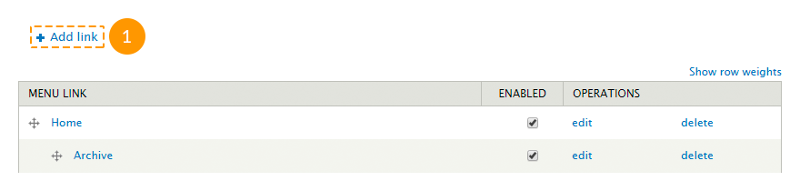
- To edit a link, click Edit.

- To remove a link, click Delete.

- To change the items order, use the drag-and-drop method to place the item, then click Save configuration button.

To set up a drop-down menu, follow the steps below:
- In the admin panel navigate to Structure → Blocks menu or in a browser's address bar type http://www.example.com/?q=admin/structure/block, where www.example.com is your website URL.
- Find the block with this menu title.
- Click Configure link next to the block.
- Make changes in the Superfish settings section.

- Press Save block button.
To change the menu location, follow the steps below:
- In the admin panel navigate to Structure → Blocks menu or in a browser's address bar type http://www.example.com/?q=admin/structure/block, where www.example.com is your website URL.
- Find the block with this menu title.
- Move the block to the needed region, the same way as a regular block.
- Press Save blocks button.
User menu
Users menu is a standard Drupal menu. It does not include any drop-down menus. To edit this menu or change its location, you can use the same instructions provided for the main menu.
Footer menu
Footer menu duplicates the main menu. To set up this menu, follow the steps below:
- In the admin panel navigate to Structure → Blocks menu or in a browser's address bar type http://www.example.com/?q=admin/structure/block, where www.example.com is your website URL.
- Find the block with this menu title.
- Click Configure link next to the block.
-
On the appeared page besides the standard fields fill in the following ones:
- Menu - the name of the menu that needs to be duplicated;
- Starting level - block visibility on a page. Blocks that start from the first level will always be visible. Blocks that start from the second level or deeper will be visible only on the pages, where these menu items are active.
- Maximum depth - the number of the visible menu levels. Set 1 value to disable all sub-menus.
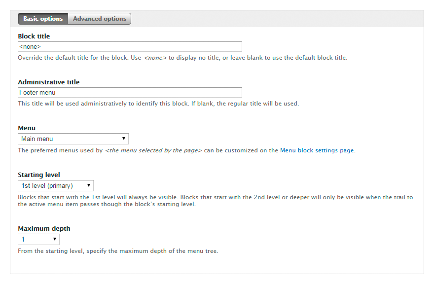
- Press Save block button.
Feel free to check the following instructions:
Content type management
Drupal templates include the following main content types:
- Banner represents company name, logo and additional information. It can be used in blocks like "Our partners", "Our clients", etc.
- Employee consists of an employee’s photo and a summary regarding the employee. It can be used in blocks like "Our team", "Our staff", etc.
- FAQ represents content in question-answer form. Such content type is being used on FAQ pages.
- Portfolio item consists of a title, an image and some information. Such content type is being used on pages like "Portfolio", "Gallery", etc.
- Service consists of a title, an image and and some information. It can be used in blocks like "Services", etc.
- Slide consists of a title, an image and some information. It is being used in the slider on the Home page.
- Testimonial - consists of a short feedback and some information about its author. Can be used in "Testimonials", "What people say about us" blocks, etc.
- Other content types.
Any changes made in these content types (adding, editing, deleting) instantly appear in the blocks or on the pages where they are used.
Some of the modules contain their own content types. For example, the Panels module adds Panel content type.
You can also create custom content types.
To edit, delete or manage a content type, follow the instructions below:
- To check the full list of the existing content types, in the admin panel navigate to Content menu or in a browser's address bar type http://www.example.com/?q=admin/content, where www.example.com is your website URL.
- To create a new node, click Add content link.

- On the appeared page select a content type.

- Fill in the required fields and click Save button.
- To edit an existing node, on the Content page in the Show only items where field select a content type and click Filter button.
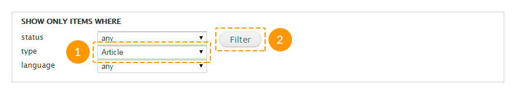
- To edit a node of the content type, click Edit link next to the node title.

- To remove a node, click Delete link next to the node title.
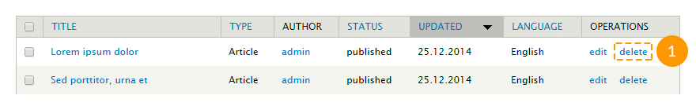
Feel free to check the following instructions:
Page management
All template pages are created using the Panels module.
To manage pages, follow the instructions below:
- To check the list of all existing pages, in the admin panel navigate to Structure → Pages menu or in a browser's address bar type http://www.example.com/?q=admin/structure/pages, where www.example.com is your website URL.
- To create a new page, click Add custom page link.

- Follow the instructions on the screen, fill in all required fields, save the changes.
- To edit an existing page, click Edit link next to the page title.

- To remove a page, in the editing mode click Delete tab at the top of the page.

Feel free to check the following instructions:
View management
Most Drupal templates content is made using views, such as:
- Archive takes the content type "Blog entry", arranges them by months and displays them in the block or page mode.
- Banners takes the content type "Banner" and displays them in the block mode.
- Categories takes taxonomy terms from the "Blog categories" vocabulary and displays them in the block mode.
- FAQs takes the content type "FAQs" and displays them in the page mode.
- Portfolio takes the content type "Portfolio Item" and displays them in the Portfolio (Gallery, Services) page mode in two, three or four columns.
- Portfolio filter creates a portfolio filter block that can be used in the "Portfolio" view.
- Recent comments takes comments and displays them in the block or page mode.
- Recent posts takes the content type "Blog entry" and displays them in the block mode.
- Slider takes the content type "Slide" and displays them in the slider block mode.
- Team takes the content type "Employee" and displays them in the block mode.
- Testimonials takes the content type "Testimonial" and displays them in the block or page mode.
- And other views.
To manage views, follow the instructions below:
- To check the full list of all existing views, in the admin panel navigate to Structure → Views menu or in a browser's address bar type http://www.example.com/?q=admin/structure/views, where www.example.com is your website URL.
- To create a new view, click Add new view link.

- On the appeared page specify a view title, content type, ordering type and display mode.
- To set additional parameters, press Continue & edit button. To complete, press Save & exit button.

- To edit an existing view, select Edit option from the drop-down list next to the view title.

Do not make changes to an existing view, if you are not sure what you are doing.
- To remove an existing view, select Delete option from the drop-down list next to the view title.

- Views displayed in the block mode can be managed the same way as the regular blocks. You can also open a view block's settings page directly from your site front-end. To do it, mouse over the needed block, click the gear wheel icon at the top right corner of the block and choose the Configure block option:

- Views displayed in the pages mode can be set up the same way. Mouse over the needed block, click the gear wheel icon at the top right corner of the block and choose the Edit view option:

Feel free to check the following instructions:
Media management
Media module controls the uploading of images and videos.
To manage media, follow the instructions below:
- To check the full list of all existing media files, in the admin panel open Content menu and navigate to Media tab or in a browser's address bar type http://www.example.com/?q=admin/content/media, where www.example.com is your website URL.
- To remove existing images or videos, check them, in the Operations field choose Delete option and click Submit button.

- To add a media file to a node, click Select media button in the node editing mode.

-
On the appeared page:
- in the Upload tab you can upload an image from your computer;
- in the Web tab you can specify an image URL or a YouTube or Vimeo video URL;
- in the Library tab you can select an image or video from the Drupal Media library.

Please, note, that you can add a video only to the Blog entry content type nodes.
Feel free to check the following instructions:
Shortcodes
Shortcode is a little bit of code that contains 1-2 words. Shortcodes are used instead of writing a large program codes (dozens of lines) to perform some functions.
To use shortcodes the Shortcode, TM Shortcodes modules should be enabled.
The full list of all available shortcodes you can check in the Text format section while creating a node.

You can use the following shortcodes:
-
[clear][/clear] - clears floated blocks. The shortcode contains the following attributes:
- class - an additional class;
- id - an element indicator (id);
- type - an element type: block (div, d) or in-line (span, s).
-
[col][/col] - displays content in columns. The shortcode contains the following attributes:
- align - columns alignment: right - a column will appear at the right side of the external block, center - a column will appear at the center of the external block;
- class - an additional element class;
- clear - clears floated blocks: clear-both - on both sides, clear-left - on the left side only, clear-right - on the left right only;
- last - should has "1" value for the last column.
- width - column width: 1-2 - a half, 1-3 - a third, 2-3 - two thirds, 1-4 - a fourth, 3-4 - three fourths, 1-5 - a fifth, 2-5 - two fifth, 3-5 - three fifth, 4-5 - four fifth, 1-6 - a sixth or 5-6 - five sixths external blocks.
It is recommended to use this shortcode inside [clear][/clear] shortcode.
For example:
[clear type="div"] [col width="1-3"]column content[/col] [col width="1-3"]column content[/col] [col width="1-3" last="1"]column content[/col] [/clear]Possible use cases:
-
[counter][/counter] - displays animated counters. The shortcode contains the following attributes:
- class - an additional element class;
- number - any integer number;
- timer - count speed from 0 to the specified date in milliseconds.
The shortcode content serves as a title.
For example:
[counter number="300" timer="30" class="custom-class"]Title[/counter]Possible use cases:

-
[icon][/icon] - displays FontAwesome icons. The framework uses FontAwesome 4.1.0 version. The shortcode contains the following attributes:
- class - FontAwesome icon class;
- link - URL-address, if you want to add a link to the icon.
For example:
[icon class="fa-star"]Текст[/icon]Possible use cases:

-
[gmap][/gmap] - inserts a Google map. The shortcode contains the following attributes:
- class - additional element class;
- lat_coord - latitude coordinate;
- lng_coord - longitude coordinate;
- zoom_value - initial zoom level of the map. Use values from 1 to 20;
- zoom_wheel - adds a scroll wheel to the map. Use "yes" or "no" value.
For example:
[gmap lat_coord="41.850033" lng_coord="-87.6500523" zoom_value="15" zoom_wheel="no" class="custom-class"][/gmap]Possible use cases:
-
[piegraph][/piegraph] - displays a cycle progress indicator. The shortcode contains the following attributes:
- barcolor - a color of the bar line;
- class - an additional element class;
- linewidth - the line width, any integer number;
- percent - a progress in percents (0-100);
- trackcolor - a color of the track line (progress line);
- width - diameter of the progress bar, any integer number.
The shortcode content serves as a title.
For example:
[piegraph percent="60" width="200" barcolor="#21c2f8" trackcolor="#cccccc" linewidth="3"]Title[/piegraph]Possible use cases:

-
[progressbar][/progressbar] - displays a progress bar. The shortcode contains the following attributes:
- class - an additional element class;
- percent - a progress in percents (0-100);
The shortcode content serves as a title.
For example:
[progressbar percent="30"]Title[/progressbar]Possible use cases:

One-page templates work specifics
All the instructions, listed above are valid for one-page templates.
Content
In order to change template content, open your site admin panel and go to Structure → Blocks page or type http://www.example.com/?q=admin/structure/block in browser address bar, where www.example.com is your site URL.
Place blocks into needed regions and save settings.
Please make sure to place all the required blocks at Home page.
In order to assign block to Home page only, do the following:
- Go to Visibility settings in block editing mode and switch to Pages tab.
- In the field Show block on specific pages check Only the listed pages.
- Type
<front>to text field at the same tab.

Menu
Make sure that Superfish module is enabled.
After placing all the blocks to needed regions, you can proceed with Main menu editing.
You can delete and change menu items order same way, as in regular menu.
In order to add/edit menu item, type link like <front>#block-id in Path field, where #block-id - block or region id.
The following id's are available for using:
- #home - page start id;
- #content - Content region id;
- #section_1_wrapper - Section 1 region id;
- #section_2_wrapper - Section 2 region id;
- #section_3_wrapper - Section 3 region id;
- #section_4_wrapper - Section 4 region id;
- #section_5_wrapper - Section 5 region id;
- #section_6_wrapper - Section 6 region id;
- #section_7_wrapper - Section 7 region id;
- #section_8_wrapper - Section 8 region id;
- #section_9_wrapper - Section 9 region id;
- #section_10_wrapper - Section 10 region id;
- and any other block id.
After all menu changes applied navigate to Structure → Blocks page or type http://www.example.com/?q=admin/structure/block in your browser address bar, where www.example.com is your site URL.
Move Superfish block to Menu region.
Make sure, that at block settings in Menu parent field is <Main menu> item checked.